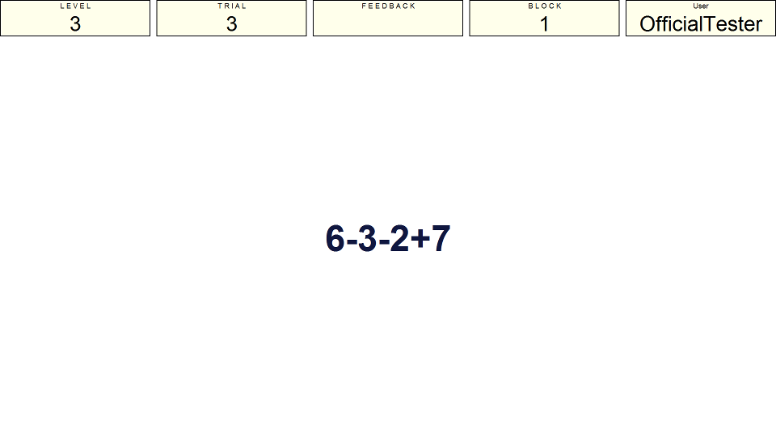
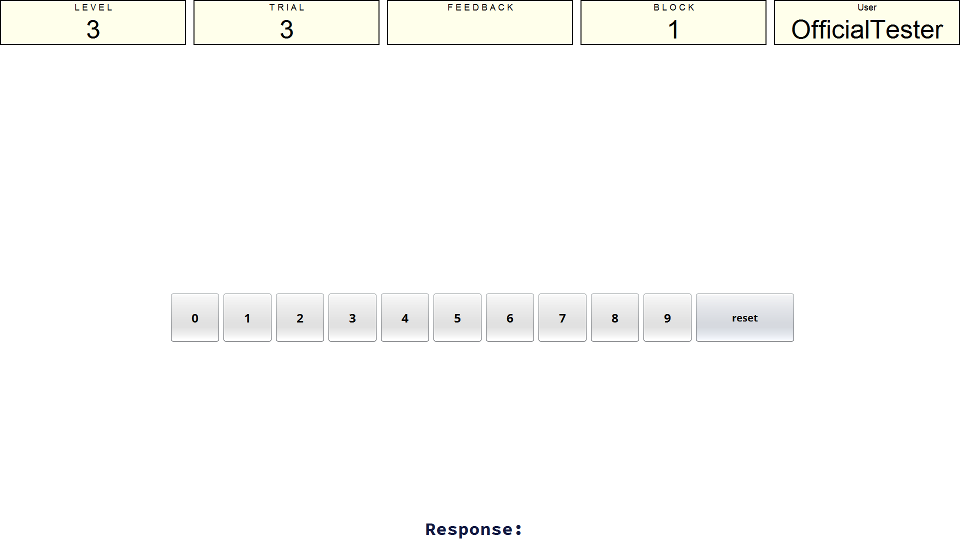
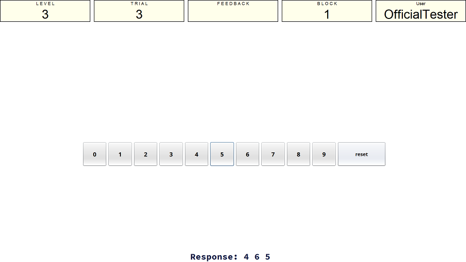

Instructions
Presentation Phase
In this task you will be shown a number of mathematical questions that you must answer. In addition to answering the questions you must remember the answer so that you can provide this when prompted to recall them.
There will be four operations in each trial and they will look like the sum shown in the image below.

The operations that you see will get more difficult as you get more correct answers. If your performance drops then the operations may become easier. You simply press the number on the keyboard that you think is the correct answer and the task will move on. When four operations have been answered the trial will move on to the recall phase.
Recall Phase
When asked for your response you are presented with this screen:

You input your response by clicking the buttons that represent the number you want to input, not by pressing keys on the keyboard. The panel at the bottom of the screen will keep track of the response you have given (see image below). If you press the wrong button and want to make a change you can press the reset button and begin your input again. The trial moves on when you click on the final number in the response sequence (the 4th number).
